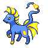
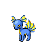
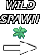
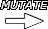
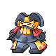
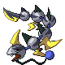
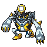
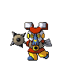
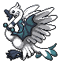

| Creator: | Discord: | @Hinozerel |
| MRO Profile: | Hinozerel |
Spreadsheet for encounter data and breeding rules
The left side panel will be loaded with all the known breeding rules. Each card shows the monster that results from the breeding rule.
The search bar at the top of the left side panel can be used to filter out the list of monsters by name or by type. For example, typing "Arkly" will result in only the card for Arkly being shown, and typing "Air" will result in all breeding rules that result in a monster with the Air type being shown.

Some cards will have a grass icon next to the monster's sprite, like Aquahorse's. This means that the monster or its first mutation form is obtainable in the wild.
When the monster card is being displayed as a parent for a breeding rule, it will include an icon to indicate which gender the monster needs to be for the breeding rule. Breeding rules involving the monster Niegg can swap parent genders, so each parent will display both gender icons.
For these rules, the monster card will simply be the required parent gender and typing.
Remember that the parent types must match exactly. Water/Basic is not the same as Basic/Water.
If the breeding rule being shown requires the wild monster to be mutated, the mutated form will also be shown.



For each step, a way to obtain each parent will be shown below the next green line, in the lower step.
In the below example for the Anselen breeding rule, the monsters Maskhi and Ioneel are needed. In the lower step, we can see ways to obtain both of these. Maskhi can be obtained through a breeding rule for Iobot which can then be mutated into Maskhi. Ioneel can be obtained in the wild, with the map it can be found in being displayed.




Most of the rules we know of were from the old iteration of MRO from over 10 years ago. The rules were carried over into the current iteration of the game so they should still work, but they are marked as unconfirmed until someone tries the rule and sees that it results in the correct child.
Be sure to check in on your monsters if trying an unconfirmed rule to make sure it works.
